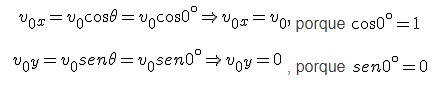
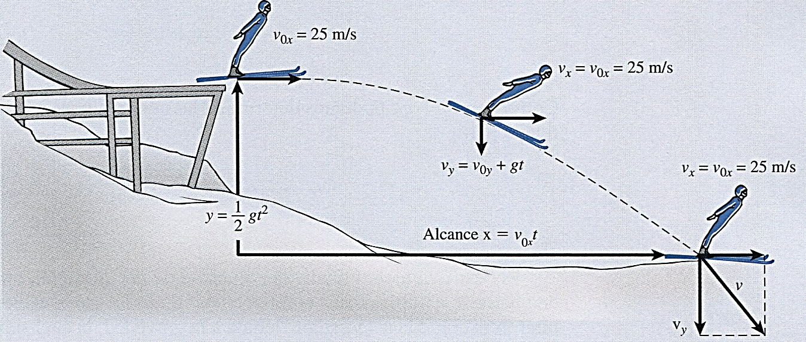
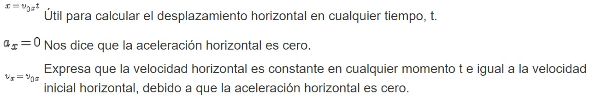
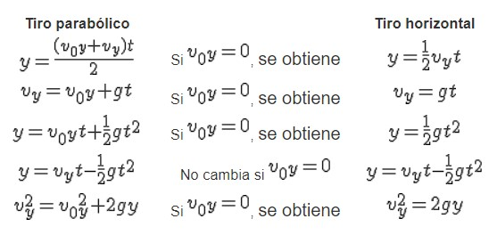
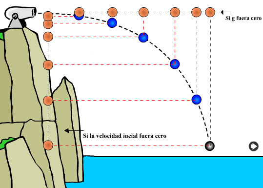

2. Tiro Horizontal, ¿Qué es?
Si un objeto se proyecta horizontalmente, la mejor manera de describir su movimiento es considerar por separado el movimiento horizontal y el vertical. El movimiento horizontal ocurre porque la velocidad inicial es solamente en el eje x, dado que ϴ=0°. Las componentes de la velocidad inicial para el tiro horizontal se calculan como:

Y puesto que también se cumple que ax = 0, entonces la velocidad horizontal permanecerá constante durante el tiempo que el objeto se encuentre en el aire. Así, en el eje x, el proyectil experimenta un MRU o un movimiento rectilíneo con rapidez constante. Véase la siguiente figura.

Las fórmulas que expresan este MRU, son las siguientes:

De los cálculos anteriores para las componentes de la velocidad en el tiro horizontal, vimos que la componente vertical de la velocidad inicial v0y siempre es igual a cero. Por tanto, las fórmulas que gobiernan el movimiento en el sentido vertical para el Tiro Horizontal, se pueden obtener a partir de las fórmulas para el tiro parabólico mediante la sustitución del valor de v0y = 0. Así, las fórmulas son:

Sin embargo, es pertinente aclarar, que no es necesario aprendernos otras 6 fórmulas para resolver situaciones de tiro horizontal, más bien la matriz de fórmulas anterior nos muestra que éstas pueden obtenerse a partir de aquellas para el tiro parabólico mediante la simple sustitución de v0y = 0.
Para concluir la teoría del tiro horizontal, es importante subrayar que si la velocidad inicial del disparo fuera cero, tendríamos una caída libre y que si la gravedad fuera cero, un tiro horizontal sería un movimiento rectilíneo horizontal a velocidad constante. Lo anterior queda expresado en la siguiente figura.
